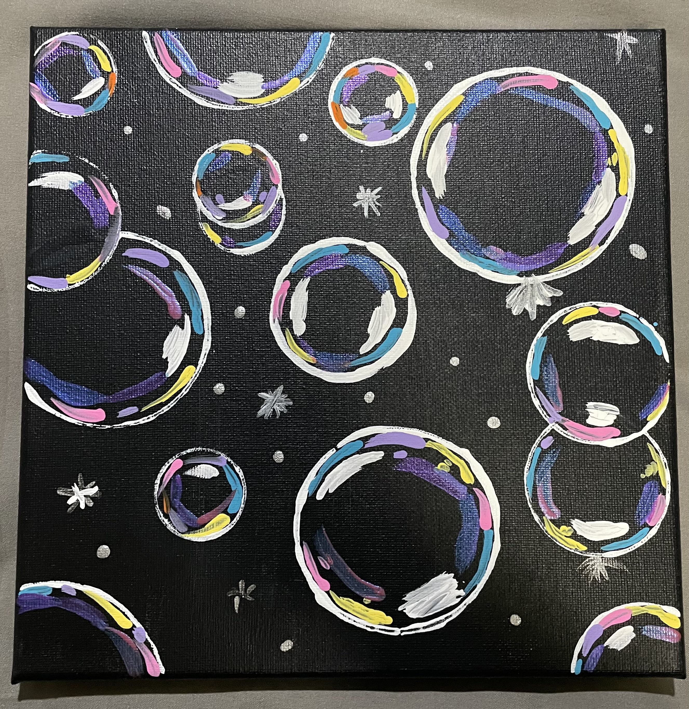
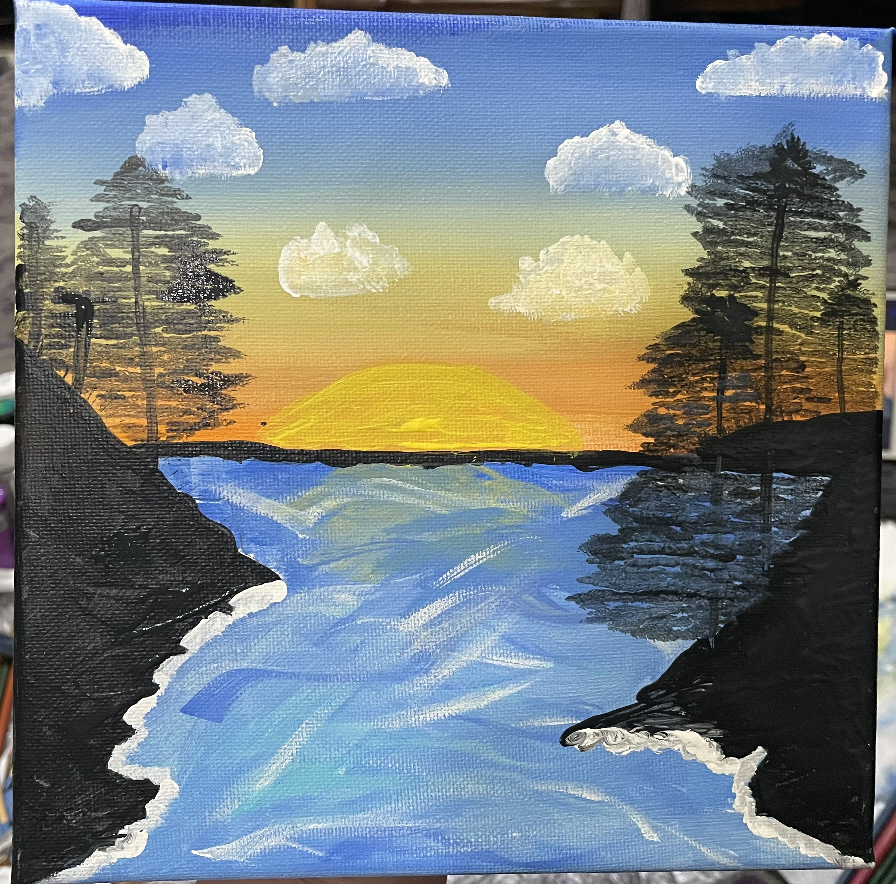
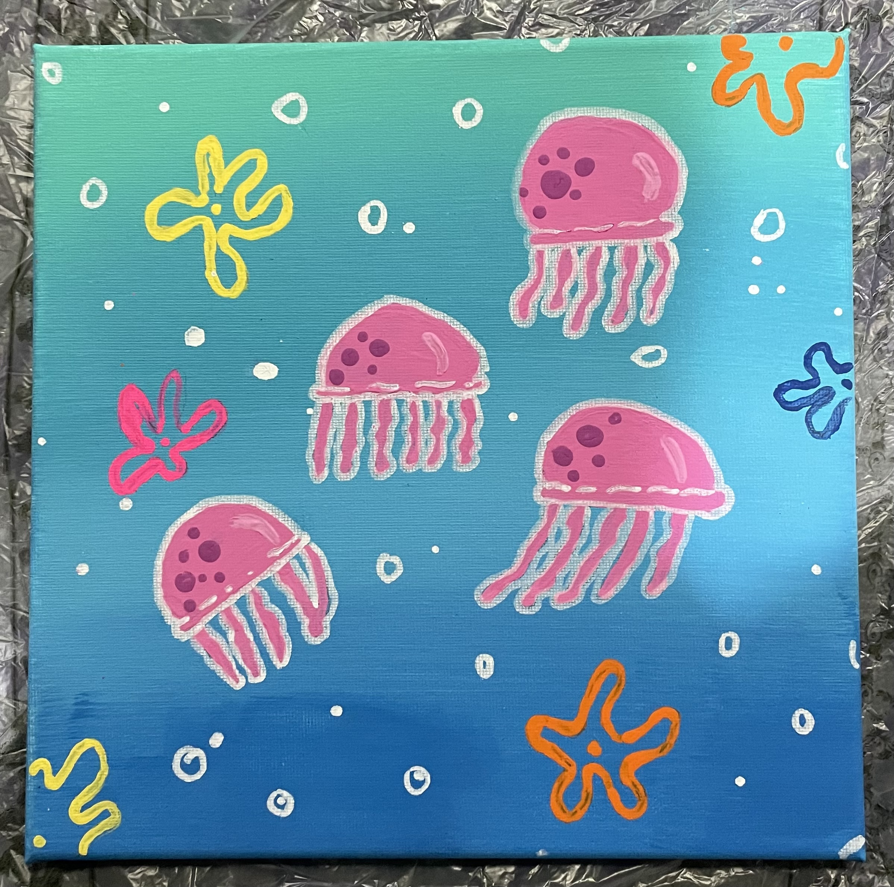
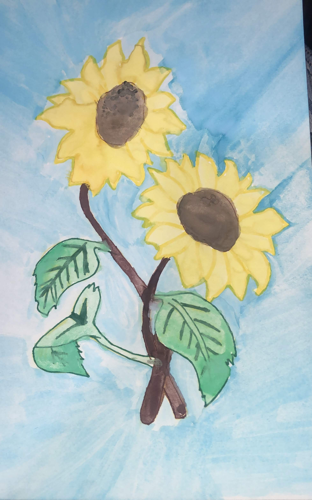
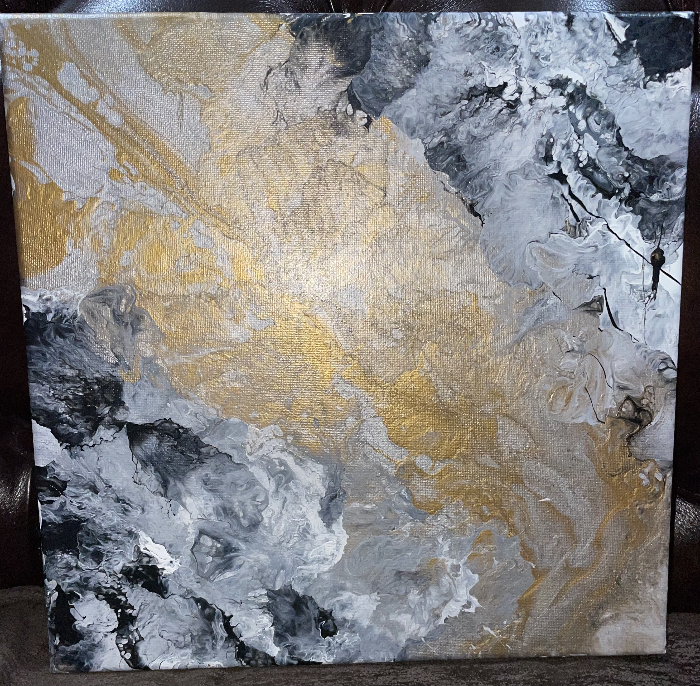
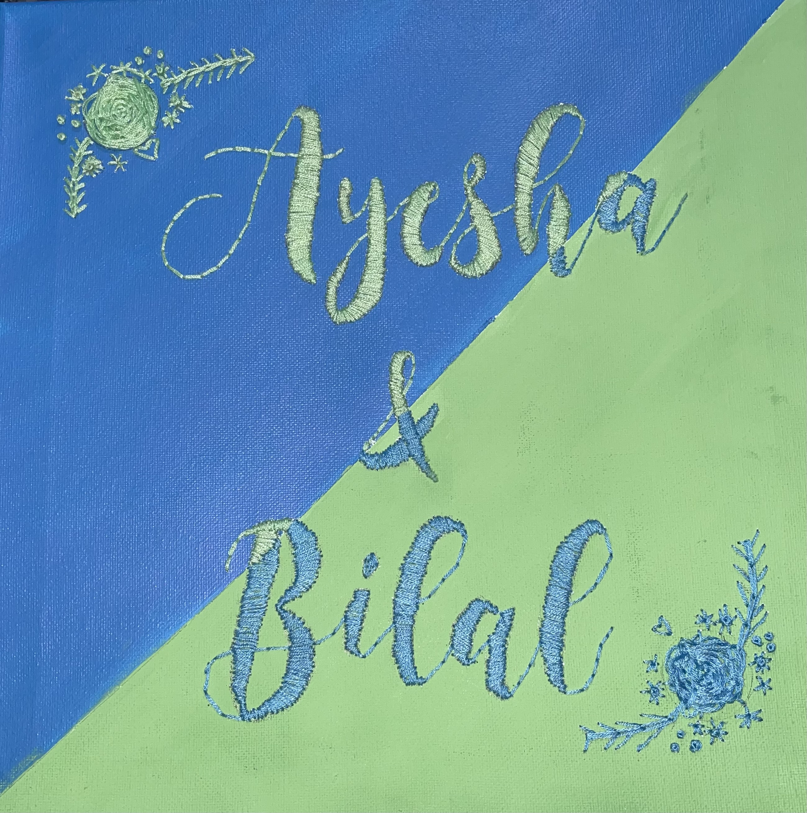
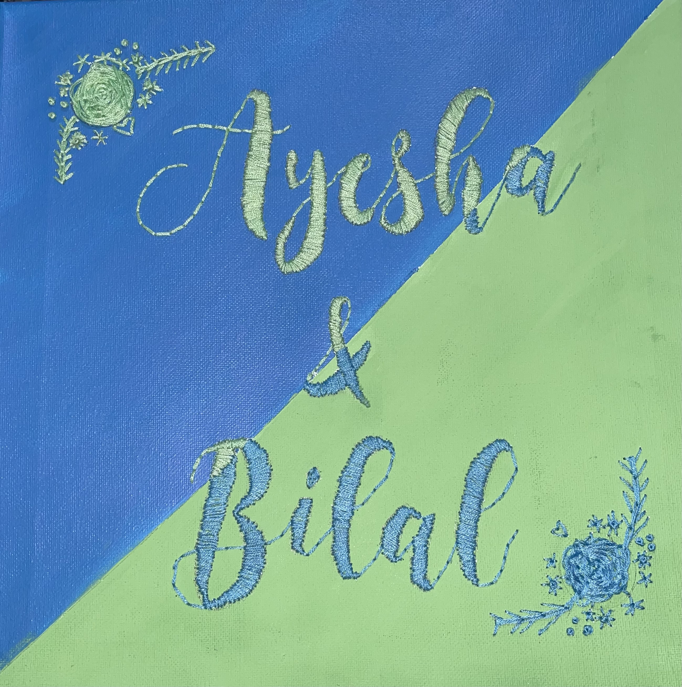

These are just some paintings made using acrylic paints
  I made this one using colored pencils
This was made by pouring paint onto the canvas
This was made using thread
These I used embroidery thread as well as paint
 

These are some paintings made for baby nurseries